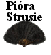
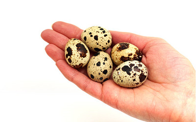

Hodowlą strusi afrykańskich zajmujemy się od 2007roku. Wtedy to w październiku 2007r. do malowniczej miejscowości Rączka (woj. opolskie, gmina Korfantów) przyjechało 6 strusi. Z biegiem czasu zyskując coraz to nowe doświadczenia hodowla stale powiększa się, a aktualnie liczy ok. 150sztuk młodzieży oraz stado podstawowe - 12 reproduktorów.
Wzrost liczebności stada jest możliwy dzięki ciągłej modernizacji fermy. W 2008r. wybudowany został dodatkowy pawilon dla reproduktorów. Obecnie również możemy poszczycić się wylęgarnią wyposażoną w nowoczesny sprzęt do inkubacji jaj, a także pomieszczeniem do odchowu piskląt (z ogrzewaniem podłogowym).
Warto podkreślić ekologiczny wymiar hodowli. Strusie na naszej fermie karmione są wyłącznie paszami roślinnymi, głównie zbożami pochodzącymi z upraw okolicznych rolników oraz wysokobiałkowymi zielonkami, zgodnie z zaleceniami specjalistów ds. żywienia strusi.
Dodatkowo ferma objęta jest ścisłym nadzorem weterynaryjnym Powiatowego Inspektoratu Weterynarii w Nysie oraz miejscowego lekarza weterynarii. Okresowo ptaki badane są w kierunku Salmonellozy, ptasiej grypy.
Mieso
Jaja strusie
Wydmuszki z jaj
Połówki skorup jaj
Odłamki skorupek
Pióra strusie
Skóry strusie
Jaja przepiórcze
Przepiórki
Mięso strusie
Mięso strusia posiada wysokie walory dietetyczne i odżywcze. Struś nie jest ptakiem hodowanym na masową skalę, a mięso z niego pozyskiwane jest bezpieczne pod względem zdrowotnym.
Mięso strusie jest niskokaloryczne, zawiera stosunkowo niewielką ilość cholesterolu oraz korzystny profil kwasów tłuszczowych. Pod tym względem mięso strusie jest zbliżone do mięsa indyczego. Spośród mięs dostępnych na rynku, mięso strusie charakteryzuje się najniższą zawartością tłuszczu (0,9% w mięsie surowym). Ponadto mięso strusie zawiera najwyższą zawartość wielonienasyconych kwasów tłuszczowych – około 35%.
Dodatkowo mięso strusie zawiera stosunkowo dużo kwasu arachidonowego, niezbędnego do prawidłowej budowy układu nerwowego. Dodatkowo wzmacnia on odporność organizmu, a jego niedobór zwiększa ryzyko wystąpienia alergii oraz chorób autoimmunologicznych (reumatoidalne zapalenie stawów, toczeń). Białko zawarte w mięsie strusim jest wysokiej wartości biologicznej, zawiera wszystkie niezbędne aminokwasy konieczne do prawidłowego rozwoju oraz wzrostu organizmu. Mięso strusie odznacza się również niską zawartością sodu – 43 mg/100 g – oraz stosunkowo wysokim stężeniem żelaza – 2,4 mg/100 g tkanki.
Jaja strusie

Jajo strusia waży około 1650 g i w przybliżeniu zawiera 1000 g białka oraz 320 g żółtka, stanowiąc dużą porcję cennych, potrzebnych składników odżywczych. Zawartość cholesterolu w żółtku jest porównywalna z zawartością cholesterolu w jajku kurzym. Warto podkreślić duży udział w żółtku jaja strusiego wielonienasyconego kwasu tłuszczowego. W związku z czym jaja strusie w porównaniu z innymi jajkami są bardziej dietetyczne.
Wydmuszki z jaj
 |
Idealne nie tylko do wykonania przepięknych pisanek, ale także do zdobionych półmisków na owoce, szkatułek, witraży, obrazów czy grafik. |
Połówki skorup jaj

Oryginalny stroik, doniczka, dekoracja stołu? – tylko z połówkami skorup jaj strusich!
Odłamki skorupek

Odłamki skorupek wykorzystywane są do produkcji oryginalnej biżuterii oraz amuletów szczęścia - bowiem noszenie przy sobie skorupy strusiego jaja ma taką moc jak noszenie kawałka kości słoniowej!
Pióra strusie
Wykorzystywane są zarówno w plastyce, zdobnictwie czy krawiectwie. Dodatkowo dzięki ich własnością antyelektrostatycznym, używa się ich również do usuwania kurzu. Co więcej pióra strusie przynoszą szczęście (w przeciwieństwie do piór pawich)!
Skóry strusie
(surowe oraz garbowane)
Skóry strusie uważane są za produkt luksusowy. Cenione głównie dzięki dużej wytrzymałości i odporności na działanie wody, jak również za oryginalną fakturę zewnętrzną. Wytwarza się z niej całą galanterię skórzaną. Buty, torebki, paski, portfele… prawdziwy dotyk luksusu!


Jaja przepiórcze
Jaja przepiórcze są wartościowym elementem zdrowej i zbilansowanej diety. Charakteryzują się one znakomitym smakiem oraz dużym udziałem żółtka w stosunku do całego jaja. Mają działanie prozdrowotne ze względu na dużą zawartość składników odżywczych. Skład chemiczny przepiórczych jaj jest bogaty w substancje wspomagające prawidłowe funkcjonowanie całego ludzkiego organizmu. Zawierają łatwo przyswajalne i pełnowartościowe białka oraz charakteryzują się dużą zawartością aminokwasów (treoniny, metioniny) oraz mikroelementów, np. wapnia, miedzi, cynku, żelaza, fosforu, witaminy B1, B2, B12, karotenu. Dodatkowo jaja przepiórcze zawierają mniej tłuszczu oraz cholesterolu.
- Wspomagają leczenie cukrzycy, astmy, zaburzeń nerwowych, anemii, chorób nerek i wątroby.
- Stymulują rozwój umysłowy dzieci i młodzieży, dzięki dużej zawartości fosforu
- Wykazują działanie antydepresyjne - poprawiają samopoczucie i dodają energii
- Wzmacniają układ odpornościowy organizmu
- Wpływają korzystnie na słabe włosy - maski i odżywki do włosów z jaj przepiórczych wzmacniają strukturę włosów, chroniąc końcówki przed rozdwajaniem
- Poprawiają przemianę materii - niezbędne w diecie odchudzającej
- Znane są ze swoich właściwości afrodyzjakalnych
- Stosowane w diecie u osób z nadciśnieniem i innymi chorobami sercowo-naczyniowymi oraz u osób uczulonych na białko jaja kurzego (jaja przepiórcze są wolne od alergenów)
Mieso Przepiórcze
Mięso z przepiórki ma jasnoróżowy kolor i delikatny smak. Jest chude i bogate w witaminy, dlatego zalecane jest głównie w diecie niemowląt i dzieci, osób starszych oraz rekonwalescentów.
Tuszkę z przepiórki możemy gotować, piec, dusić, nadziewać mięsnym, ziołowym lub owocowym farszem. Powstają z niej smaczne zupy, rosoły oraz potrawki. Najlepiej jednak smakuje jako samodzielne danie.
Smakosze mięsa drobiowego sądzą, że przepiórce jako przysmakowi nie dorównuje żaden inny gatunek drobiu.
Mięso przepiórki w smaku przypomina nieco miękkie mięso kurczaka, ale jest delikatniejsze i ma bardziej intensywny zapach. Należy uważać na to, że mięso zawiera mało wody, dlatego może się zbyt szybko wysuszyć podczas pieczenia. Aby temu zapobiec można owinąć zwierzę plastrami boczku lub słoniny albo piec w rękawie do pieczenia, dzięki czemu sos zapobiegnie nadmiernemu wyschnięciu mięsa.
W SPRZEDAŻY:
- jaja przepiórcze konsumpcyjne
- jaja przepiórcze lęgowe
- tuszki przepiórcze
- pisklęta i młodzież
- rodziny do dalszej hodowli
Porady w przygotowywaniu mięsa strusiego
Przygotowanie i pieczenie mięsa strusiego wymaga podporządkowania się kilku regułom, bez których nie uda nam się uzyskać pożądanego efektu smakowego:
1. Jak większość mięs czerwonych, strusina powinna najpierw zostać ścięta (lekko podsmażona), po czym pieczona wg upodobań. Najlepiej jest piec ją na niewielkiej ilości tłuszczu (olej lub masło) w średniej temperaturze.
2. Po podsmażeniu mięsa (świadczy o tym kolor mięsa) w średniej temperaturze, należy założyć 15 minut pieczenia dla każdych 500 g (zwłaszcza dotyczy dużych porcji) pieczonych w piekarniku (średnio w temperaturze 150-170°C), średnia grubość steku powinna wynosić 2-2,5 cm. Strusinę powinno podawać się różową.
3. W trakcie pieczenia w piekarniku strusinę należy często podlewać jej własnym sosem.
4. Nie należy nigdy nakłuwać mięsa.
5. Strusinę najlepiej podawać jest na talerzach bądź naczyniach uprzednio ogrzanych.
Jajecznica z jaj strusich
Składniki
- • 2 jajo strusie
- • masło
- • sól, pieprz
- • (- cebula, szczypiorek)
- • wiertarka
Przygotowanie
Cebulę smażymy na małym ogniu do przyrumienia. Następnie wbijamy razem strusie jajo i pozostałe składniki (z wyjątkiem szczypioru). Mieszamy intensywnie tak, by jajecznica nie przywarła do naczynia, aż do momentu uzyskania pożądanej konsystencji. Gotową potrawę posypujemy posiekanym szczypiorem.
Strusie jajo faszerowane
Składniki:
• 1 jajko strusie
• 2 pęczki natki pietruszki
• 2 pęczki szczypiorku
• 80 g tartej bułki
• 100 g masła
• sól, pieprz
Przygotowanie
Jajko strusia gotujemy w osolonej wodzie na twardo około 2 godzin. Po wyjęciu i ostudzeniu dzielimy piłką do metalu wzdłuż na pół, uważając, żeby nie uszkodzić skorupy. Delikatnie wyjmujemy żółtko i białko z obu połówek. Dokładnie siekamy i mieszamy z posiekaną natką pietruszki i posiekanym szczypiorem oraz z tartą bułką. Doprawiamy solą i pieprzem. Połówki skorup od wewnątrz smarujemy masłem. Resztę masła siekamy i dodajemy do farszu. Farsz nakładamy do wysmarowanych skorup. Wyrównujemy i wstawiamy do piekarnika nagrzanego do 120ºC. Zapiekamy około 30-40 minut. Podajemy w skorupach na półmiskach.
Delikatna pieczeń ze strusiny
Składniki:
1,5 kg delikatnego mięsa strusiego,
125 g boczku, pociętego w paski,
1 szklanka wody,
0,5 szklanki wina lub 2 łyżki octu,
1 łyżka soli,
0,5 łyżeczki pieprzu,
2 posiekane ząbki czosnku.
Przygotowanie
Zmieszać sól z pieprzem i wetrzeć w boczek. Zrobić nacięcia w mięsie strusim i powkładać w nie boczek i czosnek. Umieścić mięso z wodą i winem w szybkowarze i gotować przez około 1 h. Następnie upiec w piekarniku.
Risotto ze strusiem i grzybami
Składniki:
- 200 gram mięsa ze strusia pokrojonego w kostki
- 400 gram grzybów mieszanych lub prawdziwków
- 250 gram ryżu
- Olej z oliwek
- Czosnek
- Sól, pieprz
- Pietruszka
- Kostka rosołowa
- Pół szklanki białego wytrawnego wina
Przygotowanie
Gotować grzyby pocięte w talarki w 2 łyżkach oleju z oliwek z dwoma ząbkami czosnku i łyżką pietruszkowej miazgi. Osolić. W między czasie podsmażyć przez 10 min mięso strusie w 2 łyżkach oliwy z oliwek dodając do smaku soli i pieprzu. Jak już grzyby będą gotowe, dołożyć je do mięsa strusiego. Mieszać by nabrało smaku. Następnie dolać pół szklanki białego wina. Pozwolić na powolne parowanie wina, a następnie dodać kostkę rosołową cały czas mieszając. Dołożyć ryż by nabrał smaku i mieszać kilka chwil. Podawać na gorąco
Sznycel ze strusia z migdałami
Składniki:
4 sznycle ze strusia po 175g,
1 łyżeczka soli,
2 łyżki mąki,
50 g masła,
100 g płatków migdałowych,
2 połówki brzoskwiń z puszki,
1 łyżeczka pieprzu mielonego białego,
1 łyżeczka papryki mielonej słodkiej.
Przygotowanie
Mięso umyć, osuszyć, usunąć wszystkie błony, sznycle natrzeć z obu stron pieprzem. Sól wymieszać z mąką i papryką, obtoczyć w niej sznycle. Nadmiar mąki otrzepać. Połowę masła rozgrzać w dużej patelni i smażyć na nim sznycle po l minucie z każdej strony. Zdjąć sznycle z patelni i obtoczyć je w płatkach migdałowych. Migdały dobrze przycisnąć do mięsa. Pozostałe mięso włożyć na patelnię smażyć sznycle ponownie z każdej strony po 3-4 minuty. Ułożyć sznycle na podgrzanym półmisku i przechowywać w cieple. Osączone połówki z brzoskwini pokroić w plasterki i podgrzać krótko na patelni. Sznycle podawać udekorowane pokrojonymi brzoskwiniami. Odpowiednim dodatkiem jest bagietka i młoda sałata.
Struś w morelach
Składniki:
500 g morel,
500 g strusiny,
3 łyżki oleju, 1 szklanka śmietany,
4 cebule,
1 łyżka masła,
Sól, pieprz, cukier.
Przygotowanie
Morele opłukać, osuszyć i podzielić na ćwiartki pozbawiając pestek. Mięso opłukać, osuszyć, natrzeć solą i pieprzem, obsmażyć na gorącym oleju. Cebulę obrać, przekroić na pół, dodawać do mięsa i usmażyć, aż się zeszkli. Mięso przełożyć wraz z cebulą do rondla, dodać 1/4 moreli i masło, dusić chwilę pod przykryciem. Dodać śmietanę i dalej dusić 15-20 min na małym ogniu. Gdy mięso będzie miękkie, wyjąć, pokroić, pozostałe morele wrzucić do sosu. Całość doprawić solą, cukrem i pieprzem od smaku. Mięso podawać w sosie.
Strusina po farmersku
Składniki:
Duży filet z mięsa strusiego,
Pepperoni łagodne (ok. 10 szt.),
Grzyby suszone (ok. 5 dag),
Pomidory suszone na słońcu (produkt oryginalny) zamiennie
pomidory i Ketchup do smaku,
Cebulki marynowane,
Oliwa z oliwek,
3 ząbki czosnku,
Zioła prowansalskie,
Pieprz, sól do smaku,
Nać pietruszki.
Przygotowanie
Filet natrzeć ziołami i rozgniecionym czosnkiem. Na rozgrzaną oliwę wrzucić filet. Smażyć z jednej strony i z drugiej strony około 30 minut. Pokrojoną paprykę pepperoni, suszone pomidory, cebulki oraz wcześniej sparzone grzyby wrzucić do pieczeni podlewając wodą. Całość dusić około 40 min na wolnym ogniu. Wywar (sos) przyprawić do smaku (zagęścić jogurtem albo mąką). Mięso kroić skośnie w poprzek włókien. Polać gorącym sosem. Całość udekorować natką pietruszki. Podawać z ryżem zabarwionym na żółto szafranem.
Stek ze strusia z sosem czosnkowym
Składniki:
Marynata:
4 ząbki czosnku,
3 łyżki oliwy z oliwek,
1 łyżka musztardy francuskiej,
2 łyżki przyprawy grilowej,
Sos:
1/2 l. jogurtu naturalnego,
4 łyżki majonezu,
Szczypta cukru,
Papryka ostra i słodka do smaku,
1 główka czosnku (rozgnieść),
2 drobno starte ogórki konserwowe,
Sól, pieprz, do smaku.
Wszystkie produkty połączyć, dobrze wymieszać. Sos powinien być bardzo ostry.
Przygotowanie
Mięso oczyścić z błony zewnętrznej, pokroić skośnie w poprzek włókien steki o grubości 1-1,5 cm. Przygotować marynatę (wszystkie składniki połączyć). Mięso marynować minimum 4 godziny. Steki smażyć na rozgrzanej oliwie na średnim ogniu około 4 min. z jednej strony. Następnie zmniejszyć ogień i przewrócić na drugą stronę. Smażyć ok. 5 min.
Rosół z przepiórek
Przygotowanie
Tuszkę przepiórki zalać zimną wodą, wstawić na niewielki ogień, zagotować. Po zagotowaniu zmniejszyć ogień do minimum, dodać włoszczyznę, marchewki, pietruszkę, seler i kawałek pora, a także wszystkie przyprawy z wyjątkiem magii. Gotować na maleńkim ogniu bez przykrycia do czasu, aż przepiórka będzie miękka. Pod koniec gotowania dodać odrobinę magii do smaku. W międzyczasie ugotować makaron. Rosół podawać z ugotowanym makaronem, talarkami marchewki i drobno posiekaną natką pietruszki.
Przepiórka pieczona
Składniki:
- • 2 przepiórki
- • 5 dag słoniny
- • 2 zmiażdżone ząbki czosnku
- • mielone jagody jałowca
- • mielona kolendra
- • sól
- • pieprz
Przygotowanie
Tuszki natrzeć czosnkiem, posypać solą, jałowcem i kolendrom. Obłożyć dokładnie cienkimi plasterkami słoniny, związać ciasno bawełnianą nicią, pozostawić w cieple minimum 10 minut. Piekarnik rozgrzać do temperatury 180ºC. Mięso ułożyć na blasze, piec do zrumienienia.
Przepiórki duszone w śmietanie
Przygotowanie
Naszpikować przepiórkę, posolić i obrumienić na maśle, potem przekrajać, włożyć znów do rondelka, podlać śmietaną rozbitą z łyżką mąki i dusić pod pokrywą. Zamiast w śmietanie można także dusić w sosie maderowym - zrumieniwszy na maśle łyżkę, mąki, wlać kieliszek madery lub portweinu, podlać bulionem i dusić, przewracając przepiórki, aby dobrze nasiąkły tym sosem.
Faszerowane przepiórki
Składniki:
4 przepiórki
sól i świeżo mielony czarny pieprz
4 łyżki gotowanego ryżu
4 suszone morele, drobniutko posiekane
1 szczypta mielonego imbiru
½ łyżeczki otartej skórki pomarańczowej
1 łyżka orzechów piniowych
stopione masło
4 łyżki białego wina
sok z połowy pomarańczy
koniak
Przygotowanie
Wytrzyj przepiórki i natrzyj wewnątrz i na zewnątrz solą i pieprzem. Połącz ryż, posiekane morele, imbir, startą skórkę pomarańczową oraz orzeszki. Dodaj odrobinę stopionego masła, żeby farsz nie był sypki. Nafaszeruj przepiórki mieszaniną i ułóż na patelni. Posmaruj przepiórki stopionym masłem przy użyciu pędzla. Upiecz w duchówce – najpierw przez 8-10 min w temperaturze 230 stopni C, a następnie 15 min w temperaturze 150 stopni C, często podlewając gęstą, odparowaną mieszaniną wina, soku pomarańczowego i 4 łyżek płynnego masła. Wyłóż przepiórki na półmisek i przechowaj w cieple. Sprawdź smak płynu pozostałego z pieczenia w patelni, ewentualnie dopraw, a następnie polej przepiórki – najpierw sosem, a potem podgrzanym koniakiem i podpal. Natychmiast podawaj.
Przepiórki w jarzynach
Składniki:
2 przepiórki, 100 g słoniny, 1 marchewka, 0.25 selera, 1 cebula, 100 g pomidorów, 200 g kapusty włoskiej, sól, pieprz, otarta skórka z cytryny, 1 łyżka soku z cytryny, 1 łyżeczka cukru, 0.5 szkl. białego wytrawnego wina, 50 g masła.
Przygotowanie
Sprawione i umyte przepiórki natrzeć solą, zostawić na godzinę w chłodnym miejscu, następnie owinąć plasterkami słoniny, polać stopionym masłem i upiec, często polewając sosem spod pieczeni. W miarę potrzeby skrapiać wodą. Kapustę drobno posiekać, marchewkę, seler i cebulę pokroić w plasterki. W rondlu stopić masło, włożyć warzywa, dodać sól, pieprz, skórkę z cytryny, wlać wino i dusić ok. 20 min. Dodać obrane ze skórki i pokrojone w ćwiartki pomidory oraz zdjętą z przepiórek, pokrojoną w kosteczkę słoninę. Doprawić do smaku solą, cukrem i sokiem z cytryny. Lekko wymieszać. Pokrojone na połówki przepiórek, ułożyć na wysmarowanym masłem żaroodpornym półmisku, obłożyć duszonymi jarzynami, wstawić na kilka minut do nagrzanego piekarnika.
Przepiórki zapiekane z pieczarkami i serem
Składniki:
2 przepiórki, 30 dag pieczarek, 20 dag cebuli, 2 łyżki tłuszczu do smażenia, parę łyżek wytrawnego białego wina, 10 dag ostrego żółtego sera, 0.5 szkl. śmietany, 1 łyżka masła do wysmarowania naczynia.
Przygotowanie
Przepiórki podzielić na porcje, posolić. Pieczarki oczyścić, umyć, osączyć z wody, pokrajać w plastry i podsmażyć na tłuszczu, odparować płyn, dodać pokrajaną w plastry cebulę, posolić, oprószyć pieprzem i smażyć ciągle mieszając do lekkiego zrumienienia. Pieczarki i cebulę wyjąć. Mięso obsmażyć na tłuszczu pozostałym ze smażenia pieczarek, przełożyć do rondla, podlać winem i dusić ok. 20 min. pod przykryciem. Żaroodporne naczynie wysmarować masłem, położyć porcje przepiórek, obłożyć cebulą, pieczarkami i utartym żółtym serem, zalać śmietaną i zapiec w dobrze nagrzanym piekarniku. Podawać z drążonymi lub młodymi ziemniakami, cykorią, zieloną sałatą.
Przepiórki w pomarańczach
Składniki:
2 - 4 przepiórki, 2 - 4 plasterki boczku lub słoniny, 2 pomarańcze umyte, obrane, wypestkowane i odwłóknione (przed obraniem ocieramy skórkę), 2 łyżeczki otartej skórki z pomarańczy, pół kostki masła, 2 ząbki czosnku, po 1 łyżeczce tymianku, rozmarynu i majeranku, sól, pieprz, 1 pomarańcza do przybrania. Do sosu: 0.5 l bulionu z dziczyzny lub z kostki rosołowej, 100 ml białego wytrawnego wina, 2 łyżki galaretki z żurawin, borówek, ewentualnie z agrestu lub porzeczek, 1 łyżka mąki ziemniaczanej.
Przygotowanie
Na rozgrzanej, suchej patelni prażymy zioła, dodajemy masło, a kiedy się roztopi, wyciskamy przez prasę czosnek. Mieszamy i odstawiamy na bok. Oczyszczone, umyte i osuszone tuszki nacieramy z zewnątrz i wewnątrz solą i pieprzem, a następnie stopionym masłem z ziołami. Owijamy plastrami boczku lub słoniny. Przepiórki wkładamy do odkrytej brytfanny i wstawiamy do nagrzanego do 200°C piekarnika. Pieczemy ok. 30 min., podlewając sosem z pieczenia. Zdejmujemy z przepiórek boczek lub słoninę i odkładamy je na bok. Do brytfanny wkładamy cząstki pomarańczy i wszystko pieczemy jeszcze ok. 15 - 20 min., ciągle podlewając powstałym sosy. Wyjmujemy przepiórki z brytfanny i trzymamy w cieple. Sos z pieczenia razem z pomarańczami przekładamy do rondelka, dodajemy bulion, wino, galaretkę, otartą skórkę pomarańczową i gotujemy na wolnym ogniu ok. 10 min. Na końcu sos zagęszczamy mąką ziemniaczaną rozrobioną w małej ilości wody. Całość zagotowujemy. Przepiórki serwujemy obłożone cząstkami pomarańczy i plasterkami chrupiącej słoniny lub boczku. Sos podajemy oddzielnie w sosjerce.
Przepiórki duszone z ryżem
Składniki:
8 przepiórek
200 g ryżu
8 plasterków słoniny
80 g masła
60 g tartego parmezanu
10 g maki
1 gałązka bazylii
1 gałązka szałwii
1 gałązka zielonej pietruszki i 1 seler naciowy
3 łyżki wazowe rosołu
1 kieliszek wina marsala
30 g białych trufli w plasterkach
sol
pieprz
Przygotowanie
Przepiórki oczyścić, umyć, obłożyć plasterkami słoniny i obwiązać, a następnie włożyć do rondla z 10 g masła i całymi gałązkami ziół. Przyprawić sola, pieprzem i dusić na małym ogniu, dolewając stopniowo wino. W tym czasie w innym rondelku rozpuścić masło, zagęścić je mąka i zalać rosołem podgrzać i dobrze wymieszać, a następnie przelać do rondla z przepiórkami i dusić jeszcze 15 minut. Gotowe przepiórki wyjąć z rondla i trzymać w cieple, aby pozostały gorące. Z sosu usunąć gałązki ziół, zebrać tłuszcz i sos przecedzić. Ryz ugotować, odcedzić i dokładnie wymieszać z reszta masła i parmezanem. Przepiórki podawać ułożone na ryżu, polane gorącym sosem i posypane plasterkami trufli.
Szaszłyki z przepiórczych jaj
Składniki:
• 12 jajek przepiórczych
• 12 pomidorków koktajlowych
• 12 czarnych oliwek
• 12 marynowanych pieczarek
• szczypior
Przygotowanie
Jajka ugotować na twardo, ostudzić, obrać ze skorupek. Pomidorki umyć, oliwki, pieczarki osączyć z zalewy, szczypior pociąć na 3-cm kawałki. Nakłuwać kolejno na drewniane patyczki do szaszłyków: pomidorki, jajka, oliwki, pieczarki, szczypior.
Brachma srebrna |
  |
Brachma kuropatwianna |
 |
Mechelner |
Barnewelder srebrny |
 |
Kury andaluzyjskie |
     |
Orpington |
Papugi nimfy |
                |
Strusie emu |
  |
Pawie |


{kind=link}
{kind=link}
{kind=link}
{kind=link}
{kind=link}
{kind=link}
{kind=link}
{kind=link}
{kind=link}
{kind=link}
{kind=link}
{kind=link}
{kind=link}
{kind=link}
{kind=link}
{kind=link}
{kind=link}
{kind=link}
{kind=link}
{kind=link}
{kind=link}
{kind=link}
{kind=link}
{kind=link}
{kind=link}
{kind=link}
{kind=link}
{kind=link}
{kind=link}
{kind=link}
{kind=link}
{kind=link}
{kind=link}
{kind=link}
{kind=link}
{kind=link}
{kind=link}
{kind=link}
{kind=link}
{kind=link}
{kind=link}
{kind=link}
{kind=link}
{kind=link}
{kind=link}
{kind=link}
{kind=link}
Przepiórki
U przepiórek występuje wyraźne zróżnicowanie pomiędzy płciami - kogutki są mniejsze (ok. 120 g) od kurek, które ważą przeciętnie 160 g. Samce mają ciemniejszą, rdzawą barwę piór głowy i kołnierza, co jest widoczne już w trzecim tygodniu życia. Przepiórki japońskie selekcjonowane były przede wszystkim w kierunku produkcji nieśnej i osiągnęły rezultaty nie spotykane u innych ptaków. Jajo przepiórki waży od 8 do 12 gramów, przeciętnie 10 g. W porównaniu z masę ciała kury, przepiórka znosi jaja ponad dwukrotnie cięższe (jajo kurze stanowi przeciętnie 3% masy ciała nioski, a jajo przepiórcze ponad 6% masy przepiórki). Imponująca jest również nieśność przepiórek, w ciągu roku jedna kurka znosi przeciętnie 280 jajek.
Fantastyczną cechą przepiórek japońskich jest niesamowicie szybka przemiana materii. Pisklęta przepiórek wylęgają się po 17 dniach inkubacji (kurczęta po 21 dniach), rosną i opierzają się bardzo szybko. Po trzech dniach mają już lotki i na całym ciele pałki piór. Po pierwszym tygodniu życia zanika puch na grzbiecie, a po trzech tygodniach opierzenie ptaków jest wystarczające, aby na podstawie koloru upierzenia rozróżnić płeć. Dojrzałość płciową uzyskuje już w 6 tygodniu życia, co jest zupełnym ewenementem wśród drobiu. Możliwym jest uzyskanie w okresie jednego roku 4 pokoleń przepiórek.
Przepiórki to fascynujące ptaki, dające nam zdrowe, smaczne jaja i pyszne mięso które gości na najbardziej wykwintnych stołach całego świata.
W SPRZEDAŻY:
- jaja przepiórcze konsumpcyjne
- jaja przepiórcze lęgowe
- tuszki przepiórcze
- pisklęta i młodzież
- rodziny do dalszej hodowli
{kind=link}


{kind=link}

{kind=link}


| info | Ferma Strusi Afrykańskich |
| adres | Rączka 6, 48-317 Korfantów |
| fermastrusi@gmail.com | |
| tel | +48 530 086 057 |
| http://www.yourmapmaker.com |